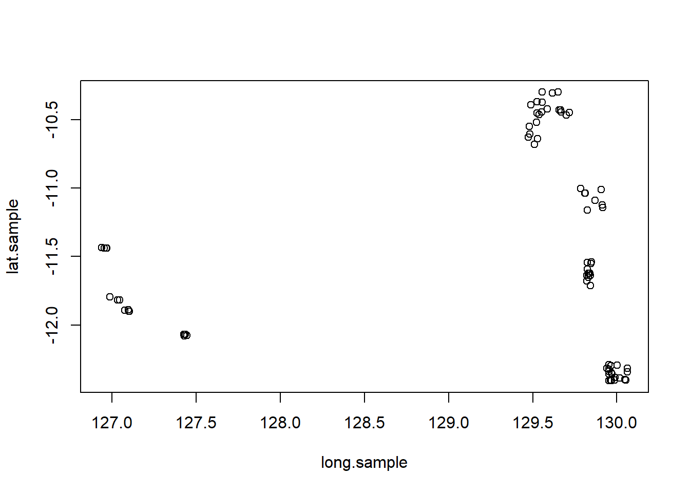
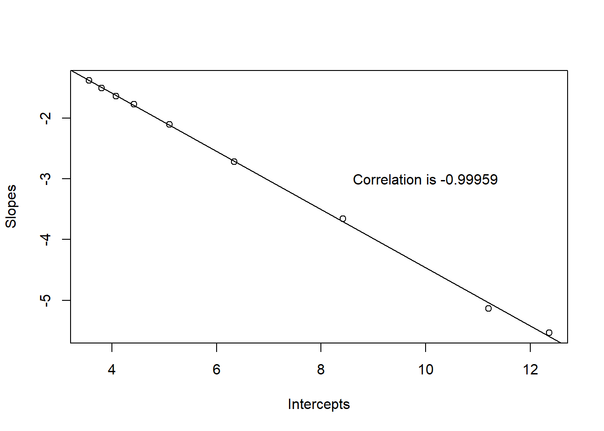

Chapter 23 Class 18: 25 11 2020
Special class: trabalho 2 presentation, continued
Hands on GLM
23.2 Sponges
In this chapter we model data on species sponge richness (SSR) as a gunction of environmental covariates. This data set is distributed with the paper Li et al. 2017 Application of random forest, generalised linear model and their hybrid methods with geostatistical techniques to count data: Predicting sponge species richness Environmental Modelling & Software 97: 112-129. The data set is in file “1-s2.0-S1364815217301615-mmc2.csv”. The reader is directed to the paper for additional details on data collection and the methods Li et al. 2017 used for analysis. Here we concentrate on GLMs to explore the main drivers of sponge species richness (SSR) across the area studied.
23.2.1 Reading data in
We read the data in
We briefly look at the data to make sure that all was read properly. We have sites with Sponge Species Richness (SSR) going from 1 to 39, with a mean of 10.48 and variance 110.78. In total we have 77 observations and 80 potential explanatory variables. We note upfront the potential practical issue that having more explanatory variables than observations raises.
23.2.2 Exploratory Data Analysis
Since we have the geographic coordinates of all the samples, we can look at the data in space.
This lets us visualize that the data comes from 8 clusters of locations, in the actual paper referred as sites A to H.


with(sponges,plot(long.sample,lat.sample,col=ifelse(1+species.richness/max(species.richness)<1.5,"red","green"))) 
Note that cluster would have been an obvious covariate to use, namely as a random effect. While we are not interested in cluster per se, we know that sites are more alike within clusters just due to spatial auto-correlation, and hence that would have been sensible to include in the modelling.
Of course the other option might be to include latitude and longitude and explicitly consider to incorporate the spatiall auto-correlation structure. However, that is beyhond the objectives in this chapter, which are essentially to illustrate a GLM analysis over a real dataset.
We will now investigate the data set in a bit more detail. We begin by looking at whether there are large correlations between the explanatory variables and SSR
corsponges=cor(sponges)
corWithSSR=corsponges[,3]
hist(corWithSSR[corWithSSR!=1],main="Correlations between SSR and explanatory covariates",breaks=seq(-1,1,by=0.05))The largest positive correlation of a variable with the response SSR is 0.31, while the largest negative correlation is -0.35. Nonetheless, that is no reason to despair. Hopefully, when considering multiple variables we will be able to model SSR in a reasonable way.
Since we have too many variables compared to observations any way, we can ask ourselves is if there are variables which are highly correlated, which could lead to unstable models and incorrect inferences about causality (which is, regardless, always hard in observational studies).
corsponges=cor(sponges)
covars=corsponges[,-c(1:3)]
corcovars=cor(covars)
hist(corcovars[corcovars!=1],main="Correlations between explanatory covariates (lat,long excluded)",breaks=seq(-1,1,by=0.05))
As we can see, there is a wide range of correlations, but in particular there is a peak at the 0.95-1 range, which we suspected might be due to the fact that some variables are actually obtained as a function of others. After a closer read at the original paper we come to realize these are highly correlated just by constriction. These correspond to echoes of radar on different frequency bands, and hence it is not surprising that they present incredibly high correlations across. It is somewhat surprising that the authors did not note this fact upfront on their paper. These are associated with backscatter variables, with code bsso we can use the function grep to look at these (note even so we divide these into several pairs plots otherwise the plots are too small for being useful).


Including pairs of such highly correlated variables in the models could lead to problems nad makes interpretation harder, and hence we need to decide which to remove a priori. This should be driven by ecological knowledge, which in our case, for SSR, is close to inexistent!
## bs22 bs23 bs24 bs29
## 0.00 0.00 0.00 0.00
## bs35 bs_o rugosity_o bs25
## 0.00 0.00 0.00 0.01
## bs26 bs27 bs28 bs33
## 0.01 0.01 0.01 0.01
## bs34 bs36 bs21 bs30
## 0.01 0.01 0.02 0.02
## bs31 bs32 tpi_o bs20
## 0.02 0.02 0.02 0.03
## var3 bs17 bs18 bs19
## 0.03 0.04 0.04 0.04
## bathy_o rugosity3 plan_curv5 bathy
## 0.04 0.04 0.04 0.05
## bs10 bs11 bs12 bs13
## 0.06 0.06 0.06 0.06
## bs16 bs_entro_o bs_var_o bs14
## 0.06 0.06 0.06 0.07
## bs15 prof_cur_o homo7 plan_cur_o
## 0.07 0.07 0.07 0.08
## homo5 var7 mud tpi7
## 0.08 0.08 0.09 0.09
## entro5 entro7 bs_lmi_o relief_o
## 0.09 0.09 0.10 0.10
## var5 bs_lmi3 bs_lmi5 bs_lmi7
## 0.10 0.10 0.10 0.10
## prof_cur3 rugosity5 bs_homo_o bathy_lmi_o
## 0.12 0.13 0.14 0.14
## bathy_lmi3 bathy_lmi5 bathy_lmi7 plan_curv7
## 0.14 0.14 0.14 0.14
## homo3 slope_o prof_cur5 entro3
## 0.14 0.15 0.15 0.15
## rugosity7 tpi3 prof_cur7 relief_3
## 0.16 0.16 0.17 0.18
## slope3 tpi5 plan_curv3 slope5
## 0.19 0.20 0.22 0.23
## slope7 relief_5 relief_7 long.sample
## 0.25 0.28 0.28 0.30
## lat.sample gravel dist.coast sand
## 0.30 0.30 0.31 0.35
## species.richness
## 1.00What does the response variable itself look like? That is the key question to answer, as it will determine the distribution we use to model it. We already saw that the variance is considerably larger than the mean, and therefore, the default go-to distribution for counts, a Poisson, will probably not be the best choice here.
hist(sponges$species.richness,xlab="Species Richness",main="",breaks=seq(0,40,by=1))
text(30,7,paste0("Mean=",round(mean(sponges$species.richness),1)))
text(30,5,paste0("Variance=",round(var(sponges$species.richness),1)))We can compare this with a poisson with the same mean, or a negative binomial with the same mean and variance. It should be obvious which provides a closer approximation, even before covariates get added to the mix.
par(mfrow=c(3,1),mar=c(4,4,0.5,0.5))
hist(sponges$species.richness,xlab="Species Richness",main="",breaks=seq(0,40,by=5))
text(30,20,paste0("Mean=",round(mean(sponges$species.richness),1)))
text(30,10,paste0("Variance=",round(var(sponges$species.richness),1)))
# Poisson
mean=10
hist(rpois(10000,mean),main="",xlab="Poisson, mean=10",breaks=seq(0,40,by=5))
#Neg Bin
mean=10
var=100
dat=rnbinom(10000,size=mean^2/(var-mean),mu=mean)
hist(dat[dat<40],main="",xlab="Negative Binomial, mean=10, var=100",breaks=seq(0,40,by=5))
While there is never too much Exploratory Data Analysis (EDA), here we move on to do some modelling.
23.2.3 Modelling
Just to begin, we take a peak at one of the variables that had a large positive correlation with SSR, in this case, dist.coast.
#testing a random variable!!
with(sponges,plot(dist.coast,species.richness))
lm0<-lm(species.richness~dist.coast,data=sponges)
abline(lm0)
##
## Call:
## lm(formula = species.richness ~ dist.coast, data = sponges)
##
## Residuals:
## Min 1Q Median 3Q Max
## -14.016 -6.986 -4.938 4.103 27.174
##
## Coefficients:
## Estimate Std. Error t value Pr(>|t|)
## (Intercept) 5.705e+00 2.026e+00 2.816 0.00621 **
## dist.coast 4.785e-05 1.673e-05 2.859 0.00549 **
## ---
## Signif. codes: 0 '***' 0.001 '**' 0.01 '*' 0.05 '.' 0.1 ' ' 1
##
## Residual standard error: 10.06 on 75 degrees of freedom
## Multiple R-squared: 0.09831, Adjusted R-squared: 0.08628
## F-statistic: 8.177 on 1 and 75 DF, p-value: 0.005492Apparently there is information to explain the species richness, and while the correlation is low, we can see that from a classical perspective, the coeficient associated with the variable would be considered significant at the usual significance levels, considering a simple linear model. However, we now that we are modelling counts,a nd hence, the Gaussian distribution is unlikely to be reasonable assumption. So, we move on to GLMs.
Lets begin by comparing just how different the model using a Poisson or a NB becomes, in terms of AIC
#testing a random variable!!
glmP1=glm(species.richness~dist.coast,family=poisson(link="log"),data=sponges)
library(MASS)
glmNB1=glm.nb(species.richness~dist.coast,link=log,data=sponges)
AIC(glmP1,glmNB1)## df AIC
## glmP1 2 975.7237
## glmNB1 3 522.3367There is absolutely no question about the fact that the NB is better here! Which does not necessarily mean it is the best model - remember AIC is a relative measure of fit.
We can compare with the quasi-poisson
and now we compare the two
##
## Call:
## glm(formula = species.richness ~ dist.coast, family = poisson(link = "log"),
## data = sponges)
##
## Coefficients:
## Estimate Std. Error z value Pr(>|z|)
## (Intercept) 1.894e+00 6.702e-02 28.258 <2e-16 ***
## dist.coast 4.135e-06 4.703e-07 8.792 <2e-16 ***
## ---
## Signif. codes: 0 '***' 0.001 '**' 0.01 '*' 0.05 '.' 0.1 ' ' 1
##
## (Dispersion parameter for poisson family taken to be 1)
##
## Null deviance: 768.25 on 76 degrees of freedom
## Residual deviance: 694.62 on 75 degrees of freedom
## AIC: 975.72
##
## Number of Fisher Scoring iterations: 5##
## Call:
## glm(formula = species.richness ~ dist.coast, family = quasipoisson,
## data = sponges)
##
## Coefficients:
## Estimate Std. Error t value Pr(>|t|)
## (Intercept) 1.894e+00 2.152e-01 8.800 3.57e-13 ***
## dist.coast 4.135e-06 1.510e-06 2.738 0.00772 **
## ---
## Signif. codes: 0 '***' 0.001 '**' 0.01 '*' 0.05 '.' 0.1 ' ' 1
##
## (Dispersion parameter for quasipoisson family taken to be 10.31074)
##
## Null deviance: 768.25 on 76 degrees of freedom
## Residual deviance: 694.62 on 75 degrees of freedom
## AIC: NA
##
## Number of Fisher Scoring iterations: 5as expected, the only difference is the increase of the standard errors associated with the parameters. Note also that in the Quasi-Poisson we get an estimate of the over-dispersion parameter, and, since we do not have a likelihood, we do not get an AIC. The parameter standard errors are bigger in the quasi case, given that the overdispersion parameter is larger than 1.
Just for comparison, we look at the output from the negative binomial model
##
## Call:
## glm.nb(formula = species.richness ~ dist.coast, data = sponges,
## link = log, init.theta = 1.084393054)
##
## Coefficients:
## Estimate Std. Error z value Pr(>|z|)
## (Intercept) 1.871e+00 2.052e-01 9.117 < 2e-16 ***
## dist.coast 4.345e-06 1.669e-06 2.604 0.00923 **
## ---
## Signif. codes: 0 '***' 0.001 '**' 0.01 '*' 0.05 '.' 0.1 ' ' 1
##
## (Dispersion parameter for Negative Binomial(1.0844) family taken to be 1)
##
## Null deviance: 89.908 on 76 degrees of freedom
## Residual deviance: 83.032 on 75 degrees of freedom
## AIC: 522.34
##
## Number of Fisher Scoring iterations: 1
##
##
## Theta: 1.084
## Std. Err.: 0.184
##
## 2 x log-likelihood: -516.337Note that in practice all models would lead us to find the dist.coast to be considered relevant to model species richness.
A bit on model selection, using anova, a Chi-squared test,
## Analysis of Deviance Table
##
## Model 1: species.richness ~ dist.coast
## Model 2: species.richness ~ 1
## Resid. Df Resid. Dev Df Deviance Pr(>Chi)
## 1 75 694.62
## 2 76 768.25 -1 -73.628 0.007534 **
## ---
## Signif. codes: 0 '***' 0.001 '**' 0.01 '*' 0.05 '.' 0.1 ' ' 1or using drop1, with an F-test
## Single term deletions
##
## Model:
## species.richness ~ dist.coast
## Df Deviance F value Pr(>F)
## <none> 694.62
## dist.coast 1 768.25 7.9498 0.006148 **
## ---
## Signif. codes: 0 '***' 0.001 '**' 0.01 '*' 0.05 '.' 0.1 ' ' 1again, both tell us that dist.coast is a relevant covariate.
We could look at the residuals for both models. First the Poisson

and then the negative binomial

It is quite hard to choose between these based on the residuals, but remember that the AIC does not leave any room for doubts, the Negative Binomial is the most likely road to take here. So now it is time to investigate what might be the best model.
## df AIC
## lm0 3 578.0226
## glmP1 2 975.7237
## glmNB1 3 522.3367